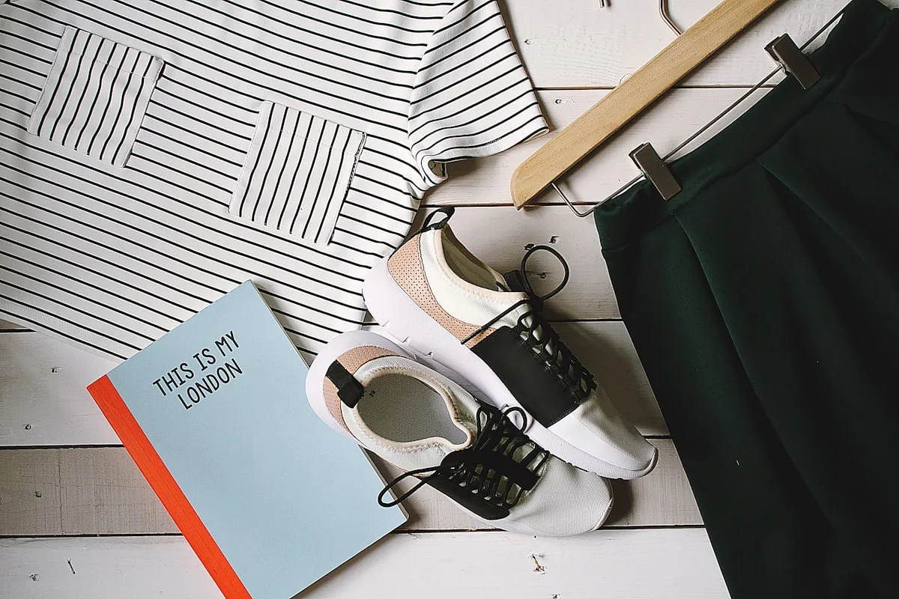

Our conservation methodology is built on thirty years of evidence. Every programme begins with rigorous ecological assessment and ends only when measurable recovery has been achieved and sustained. We operate no fixed timelines — only fixed standards.

We welcome collaborations with academic institutions, conservation organisations, and government agencies. Contact us to discuss research partnerships.
Enquire Now